Data is from paper Macrophage and neutrophil heterogeneity at single-cell spatial resolution in human inflammatory bowel disease from Garrido-Trigo et al 2023, (Garrido-Trigo et al. 2023)
The study included 9 cosmx slides of colonic biopsies
Fastantically - not only have they made their raw and annotated data available, but have also shared their analysis code; https://github.com/HelenaLC/CosMx-SMI-IBD
They have also shared browseable interface here: https://servidor2-ciberehd.upc.es/external/garrido/app/
library(Seurat)Loading required package: SeuratObjectLoading required package: sp
Attaching package: 'SeuratObject'The following objects are masked from 'package:base':
intersect, tlibrary(SeuratObject)
library(tidyverse)── Attaching core tidyverse packages ──────────────────────── tidyverse 2.0.0 ──
✔ dplyr 1.2.1 ✔ readr 2.2.0
✔ forcats 1.0.1 ✔ stringr 1.6.0
✔ ggplot2 4.0.3 ✔ tibble 3.3.1
✔ lubridate 1.9.5 ✔ tidyr 1.3.2
✔ purrr 1.2.2 ── Conflicts ────────────────────────────────────────── tidyverse_conflicts() ──
✖ dplyr::filter() masks stats::filter()
✖ dplyr::lag() masks stats::lag()
ℹ Use the conflicted package (<http://conflicted.r-lib.org/>) to force all conflicts to become errorslibrary(data.table)
Attaching package: 'data.table'
The following objects are masked from 'package:lubridate':
hour, isoweek, isoyear, mday, minute, month, quarter, second, wday,
week, yday, year
The following objects are masked from 'package:dplyr':
between, first, last
The following object is masked from 'package:purrr':
transpose
The following object is masked from 'package:base':
%notin%From the project description:
Raw data on GEO here; https://www.ncbi.nlm.nih.gov/geo/query/acc.cgi?acc=GSE234713
Inflammatory bowel diseases (IBDs) including ulcerative colitis (UC) and Crohn’s disease (CD) are chronic inflammatory diseases with increasing worldwide prevalence that show a perplexing heterogeneity in manifestations and response to treatment. We applied spatial transcriptomics at single-cell resolution (CosMx Spatial Molecular Imaging) to human inflamed and uninflamed intestine.
The following files were download from GEO
The polygon files defining the cell outlines were provided separately. Typically these would be included with the other files.
cd raw_data
tar -xf GSE234713_RAW_CD.tar
tar -xf GSE234713_RAW_HC.tar
tar -xf GSE234713_RAW_UC.tardataset_dir <- '~/projects/spatialsnippets/datasets/'
project_data_dir <- file.path(dataset_dir,'GSE234713_IBDcosmx_GarridoTrigo2023')
sample_dir <- file.path(project_data_dir, "raw_data_for_sfe/")
annotation_file <- file.path(project_data_dir,"GSE234713_CosMx_annotation.csv.gz")
data_dir <- file.path(project_data_dir, "processed_data/")
tempdir <- '~/temp/' # working on a server with a very small default tmp, which causes silent incomplete fread data.table reads on very large data (e.g. tx)
# Prevvious version of these files generated with an older seurat version
# Negative probes are now handled in a more standard way also (in main assay, rather than their own separate assay)
# Updated to use Seurats updated loadNanostring function
seurat_file_00_raw <- file.path(data_dir, "GSE234713_CosMx_IBD_seurat_00_raw_v2.RDS")
seurat_file_01_loaded <- file.path(data_dir, "GSE234713_CosMx_IBD_seurat_01_loaded_v2.RDS")
# config
min_count_per_cell <- 100
max_pc_negs <- 1.5
max_avg_neg <- 0.5
sample_codes <- c(HC="Healthy controls",UC="Ulcerative colitis",CD="Crohn's disease")This code will load each slide/sample individually, then merge together. Note that metadata is read from the metadata flat file separately after initial load, as LoadNanostring() only permits a certain list of feilds to be imported.
# This is a long running step, and was actually run via d_cosmxIBD_reload.R
# Code copied here for clarity.
load_sample_into_seurat <- function(the_sample){
so <- LoadNanostring(file.path(sample_dir, the_sample),
fov = the_sample,
assay='RNA')
# sample info
# This is easy beecause there is only one sample per slide.
so$individual_code <- factor(substr(the_sample,12,16))
so$tissue_sample <- factor(substr(the_sample,12,16))
so$group <- factor(substr(the_sample, 12, 13), levels=names(sample_codes))
so$condition <- factor(as.character(sample_codes[so$group]), levels=sample_codes)
#Seurat ignores the metadata (or can only load certain (not all) hardcoded columns if specified)
# So manually add all of the metadata!
metadata.file = file.path(sample_dir,the_sample, paste0(the_sample,'_metadata_file.csv'))
so <- add_metadata_file_content_to_seurat_metadata(so, metadata.file)
# Add fov name tool (fov came with metadata)
so$fov_name <- paste0(so$individual_code,"_", str_pad(so$fov, 3, 'left',pad='0'))
# Previously put neg probes into their own assay, but going to stop doing this, as it doesn't seem standard.
# Will,however, populate the probe annotation
# only have negative probes in ths one,not system controls,
neg_probes <- rownames(so)[grepl(x=rownames(so), pattern="NegPrb")]
so@assays[['RNA']]@meta.data$target <- rownames(so@assays[['RNA']])
so@assays[['RNA']]@meta.data$CodeClass <- ifelse(so@assays[['RNA']]@meta.data$target %in% neg_probes , "Negative","RNA")
neg_matrix <- GetAssayData(so,assay = 'RNA', layer = 'counts')[neg_probes,]
so$nCount_negprobes <- colSums(neg_matrix)
so$avg_neg <- colMeans(neg_matrix)
return(so)
}
add_metadata_file_content_to_seurat_metadata <- function(so, metadata.file) {
# Pull in full metadata
md <- data.table::fread(metadata.file, sep = ',', data.table = FALSE, verbose = FALSE, tmpdir = tempdir)
# Seurat cell identifiers constructed within ReadNanostring (matrix rownames) as:
# https://github.com/satijalab/seurat/blob/5f67c701ecc6738e9e47dc21dbd202d335df5ec3/R/preprocessing.R#L2251
# Combination of Cell ID (for non-zero cell_IDs) and FOV are assumed to be unique. Used to create barcodes / rownames.
#bcs <- paste0(as.character(tx$cell_ID), "_", tx$fov)
# Checking
## expect a small number of 'cells' to have been filtered out.
##table(md$so_cell_id %in% colnames(so))
# ANd everything from seurat should be in metadata
#table(colnames(so) %in% md$so_cell_id)
# MD is not a data.table here (and its only ever going to be one slide so that's fine)!
md$so_cell_id <- paste0(as.character(md$cell_ID), "_", md$fov)
coords <- match(rownames(so@meta.data), md$so_cell_id)
md <- md[coords,]
stopifnot(all(md$so_cell_id == colnames(so)))
md$so_cell_id <- NULL # remove col, don't need it.
so <- AddMetaData(so, md)
}
samples <- c('GSM7473682_HC_a','GSM7473683_HC_b','GSM7473684_HC_c',
'GSM7473685_UC_a','GSM7473686_UC_b','GSM7473687_UC_c',
'GSM7473688_CD_a','GSM7473689_CD_b','GSM7473690_CD_c')
sample_prefix <- paste0(substr(samples, 12,15))
so.list <- lapply(FUN=load_sample_into_seurat, X=samples)
#NB: merge is in SeuratObject packages, but must be called without ::
options(future.globals.maxSize= 10*1024^3) # 10G.
so.raw <- merge(so.list[[1]], y=so.list[2:length(so.list)], add.cell.ids=sample_prefix)
#Error in getGlobalsAndPackages(expr, envir = envir, globals = globals) :
# The total size of the 8 globals exported for future expression (‘FUN()’) is 5.90 GiB.. This exceeds the maximum #allowed size of 500.00 MiB (option 'future.globals.maxSize'). The three largest globals are ‘FUN’ (5.90 GiB of #class ‘function’), ‘p’ (25.22 KiB of class ‘function’) and ‘slot<-’ (1.36 KiB of class ‘function’)
rm(so.list)
# save
saveRDS(so.raw, seurat_file_00_raw)# load previously saved.
so.raw <- readRDS(seurat_file_00_raw)so.raw$pc_neg <- ( so.raw$nCount_negprobes / so.raw$nCount_RNA ) * 100Pull in annotations from the paper. Most cell’s have annotations, occasional ones don’t.
anno_table <- read_csv(annotation_file)Rows: 463967 Columns: 3
── Column specification ────────────────────────────────────────────────────────
Delimiter: ","
chr (3): id, subset, SingleR2
ℹ Use `spec()` to retrieve the full column specification for this data.
ℹ Specify the column types or set `show_col_types = FALSE` to quiet this message.anno_table <- as.data.frame(anno_table)
rownames(anno_table) <- anno_table$id
head(so.raw@meta.data) orig.ident nCount_RNA nFeature_RNA individual_code tissue_sample
HC_a_1_1 SeuratProject 368 189 HC_a HC_a
HC_a_2_1 SeuratProject 810 286 HC_a HC_a
HC_a_3_1 SeuratProject 119 74 HC_a HC_a
HC_a_4_1 SeuratProject 106 59 HC_a HC_a
HC_a_5_1 SeuratProject 465 209 HC_a HC_a
HC_a_6_1 SeuratProject 1322 441 HC_a HC_a
group condition fov cell_ID Area AspectRatio CenterX_local_px
HC_a_1_1 HC Healthy controls 1 1 6153 0.67 2119
HC_a_2_1 HC Healthy controls 1 2 16178 0.85 1847
HC_a_3_1 HC Healthy controls 1 3 3119 1.52 1986
HC_a_4_1 HC Healthy controls 1 4 3988 1.52 2362
HC_a_5_1 HC Healthy controls 1 5 4773 0.53 2159
HC_a_6_1 HC Healthy controls 1 6 11588 0.87 1664
CenterY_local_px CenterX_global_px CenterY_global_px Width Height
HC_a_1_1 3443 19274.56 173198.6 79 118
HC_a_2_1 3404 19002.56 173159.6 137 161
HC_a_3_1 3458 19141.56 173213.6 79 52
HC_a_4_1 3454 19517.56 173209.6 91 60
HC_a_5_1 3415 19314.56 173170.6 63 118
HC_a_6_1 3402 18819.56 173157.6 116 134
Mean.MembraneStain Max.MembraneStain Mean.PanCK Max.PanCK Mean.CD45
HC_a_1_1 680 2218 17170 29735 198
HC_a_2_1 615 4453 16775 29702 222
HC_a_3_1 989 2827 24033 29662 171
HC_a_4_1 449 2099 13575 29651 146
HC_a_5_1 1002 2425 24946 29670 299
HC_a_6_1 1024 2320 25700 29712 354
Max.CD45 Mean.CD3 Max.CD3 Mean.DAPI Max.DAPI fov_name nCount_negprobes
HC_a_1_1 9639 234 1237 20 131 HC_a_001 2
HC_a_2_1 21371 234 1520 12 122 HC_a_001 5
HC_a_3_1 6858 298 1721 13 58 HC_a_001 1
HC_a_4_1 935 206 1402 6 56 HC_a_001 0
HC_a_5_1 6387 330 1443 22 116 HC_a_001 3
HC_a_6_1 23243 328 1610 23 113 HC_a_001 8
avg_neg pc_neg
HC_a_1_1 0.10526316 0.5434783
HC_a_2_1 0.26315789 0.6172840
HC_a_3_1 0.05263158 0.8403361
HC_a_4_1 0.00000000 0.0000000
HC_a_5_1 0.15789474 0.6451613
HC_a_6_1 0.42105263 0.6051437head(anno_table) id subset SingleR2
HC_c_2_1 HC_c_2_1 stroma Pericytes
HC_c_3_1 HC_c_3_1 stroma Endothelium
HC_c_4_1 HC_c_4_1 stroma Pericytes
HC_c_5_1 HC_c_5_1 epi Secretory progenitor
HC_c_7_1 HC_c_7_1 myeloids M2
HC_c_8_1 HC_c_8_1 epi Tuft cellsso.raw$full_cell_id <- as.character(rownames(so.raw@meta.data))
so.raw$celltype_subset <- factor(anno_table[so.raw$full_cell_id,]$subset)
so.raw$celltype_SingleR2 <- factor(anno_table[so.raw$full_cell_id,]$SingleR2)
so.raw$fov_name <- factor(so.raw$fov_name)
so.raw$group <- factor(so.raw$group, levels=c("CD","UC","HC"))
so.raw$condition <- factor(so.raw$condition, levels=c("Crohn's disease", 'Ulcerative colitis', 'Healthy controls'))
table(is.na(so.raw$celltype_subset))
FALSE TRUE
459145 21240 ggplot(so.raw@meta.data, aes(x=nCount_RNA, col=orig.ident)) +
geom_density() +
geom_vline(xintercept = min_count_per_cell, lty=3) +
scale_x_log10() +
theme_bw() +
ggtitle("Counts per cell")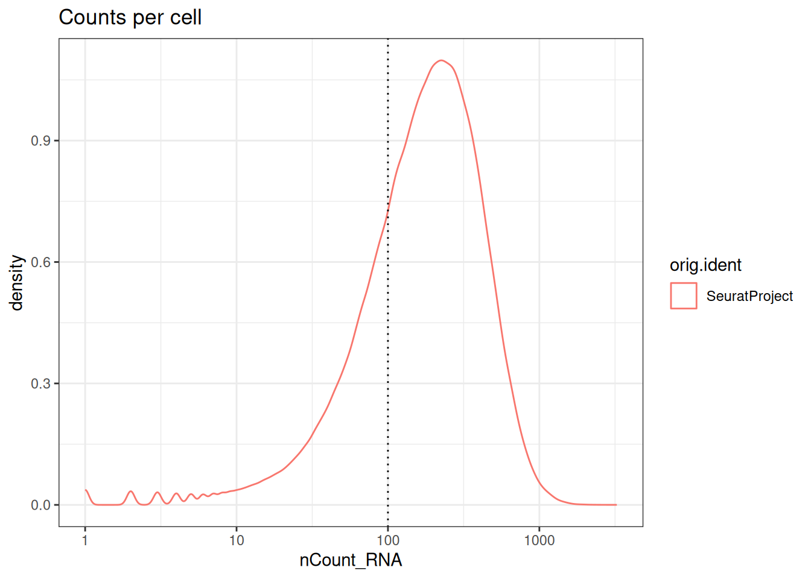
ggplot(so.raw@meta.data, aes(x=pc_neg, col=orig.ident)) +
geom_density() +
geom_vline(xintercept = max_pc_negs, lty=3) +
scale_x_log10() +
theme_bw() +
ggtitle("Negative probe composition")Warning in scale_x_log10(): log-10 transformation introduced infinite values.Warning: Removed 227705 rows containing non-finite outside the scale range
(`stat_density()`).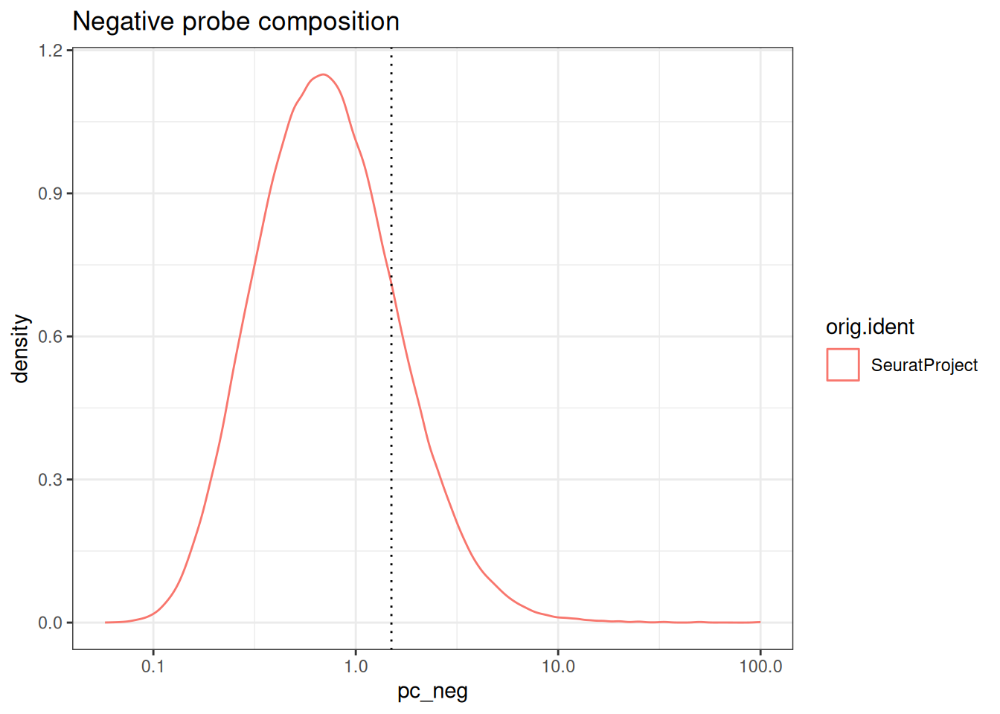
ggplot(so.raw@meta.data, aes(x=avg_neg, col=orig.ident)) +
geom_density() +
geom_vline(xintercept = max_avg_neg, lty=3) +
theme_bw() +
ggtitle("Negative probe average")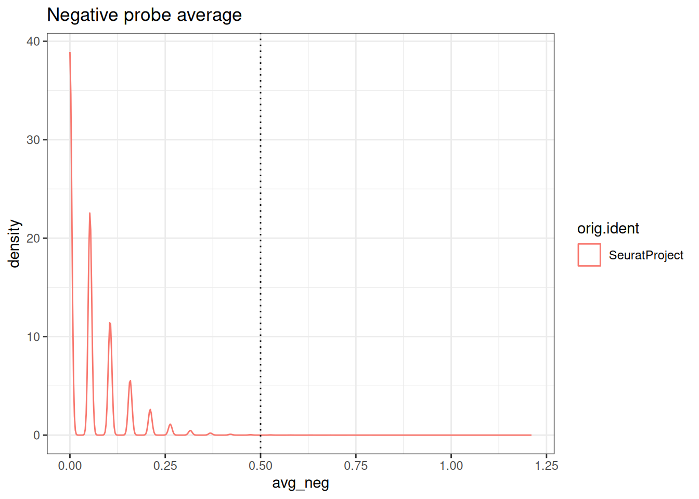
Use bottom right corner;
ggplot(so.raw@meta.data, aes(y=avg_neg, x=nCount_RNA)) +
geom_point(pch=3, alpha=0.1) +
geom_hline(yintercept = max_avg_neg, lty=3) +
geom_vline(xintercept = min_count_per_cell, lty=3) +
scale_x_log10() +
theme_bw() +
ggtitle("Negative probes vs counts")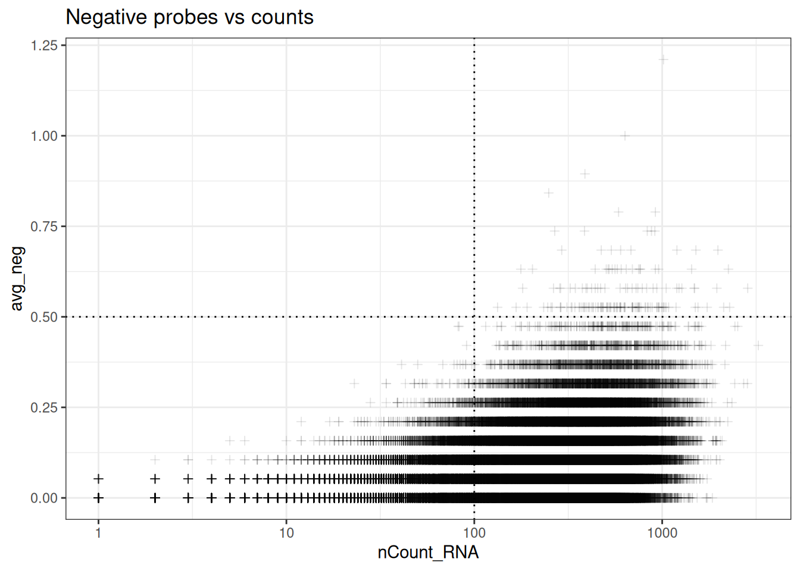
From paper: “Cells with an average negative control count greater than 0.5 and less than 20 detected features were filtered out.”
Also remove cell with no cell type annotations.
###so.raw <- JoinLayers(so.raw)
so <- so.raw[ ,so.raw$nCount_RNA >= min_count_per_cell &
so.raw$avg_neg <= max_avg_neg &
!(is.na(so.raw$celltype_subset) )]
# ncol(so.raw)
# ncol(so)Loading already pre-processed version for plots
rm(so.raw)
so <- readRDS(seurat_file_01_loaded)table(so@meta.data$orig.ident)
SeuratProject
354191 num_dims <- 15
# Run through preprocessing
so <- NormalizeData(so)
## Do per sample to mimic paper approach somewhat.
so <- FindVariableFeatures(so, nfeatures = 200)
so <- ScaleData(so) # Just 2k variable features
so <- RunPCA(so, features = VariableFeatures(so))
so <- RunUMAP(so, dims=1:num_dims)
so <- FindNeighbors(so, dims = 1:num_dims)
so <- FindClusters(so)DimPlot(so, group.by = 'tissue_sample')Rasterizing points since number of points exceeds 100,000.
To disable this behavior set `raster=FALSE`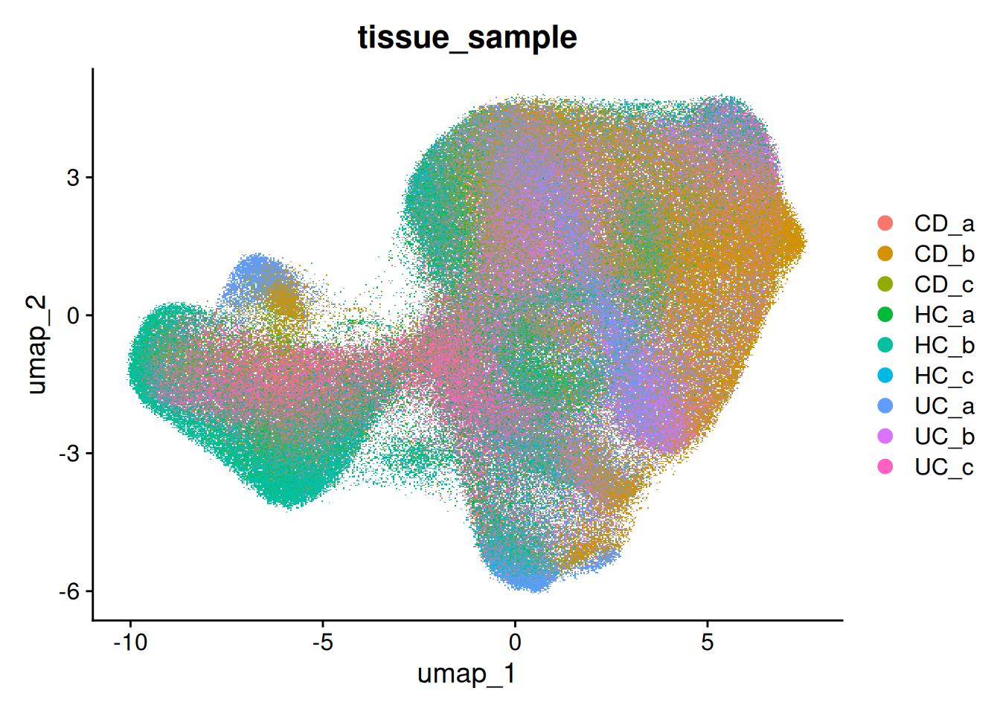
DimPlot(so, group.by = 'condition')Rasterizing points since number of points exceeds 100,000.
To disable this behavior set `raster=FALSE`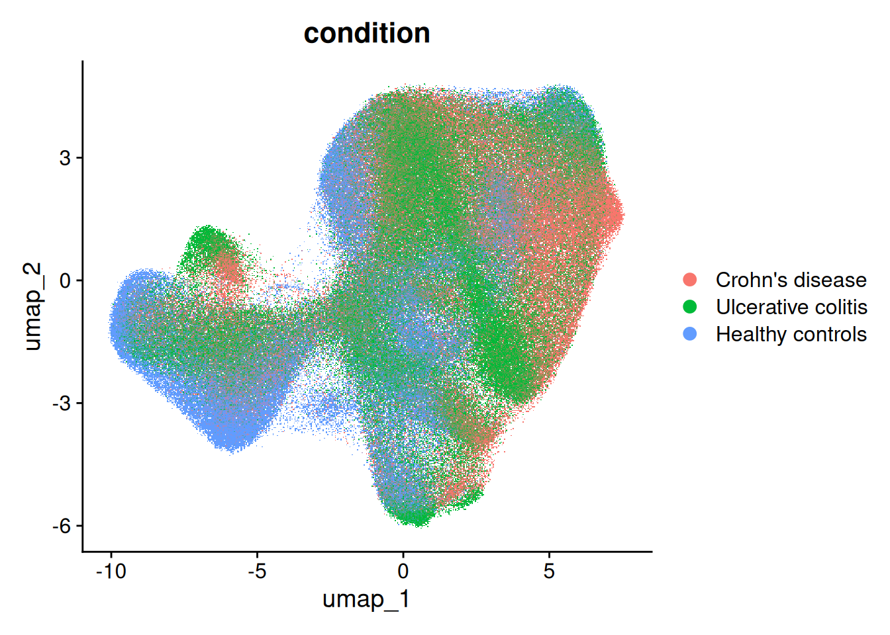
DimPlot(so, group.by = 'orig.ident',split.by = "condition")Rasterizing points since number of points exceeds 100,000.
To disable this behavior set `raster=FALSE`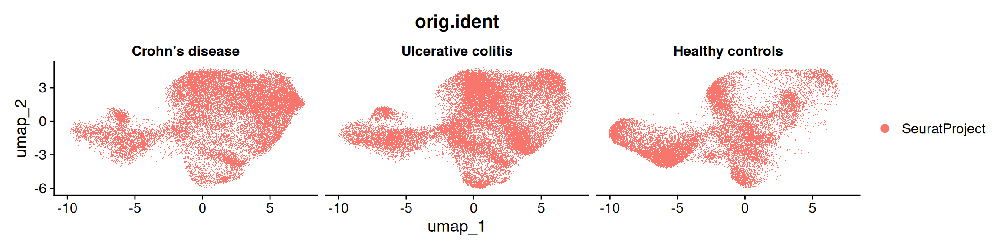
FeaturePlot(so, 'nCount_RNA') + scale_colour_viridis_c(option="magma", direction = -1)Rasterizing points since number of points exceeds 100,000.
To disable this behavior set `raster=FALSE`Scale for colour is already present.
Adding another scale for colour, which will replace the existing scale.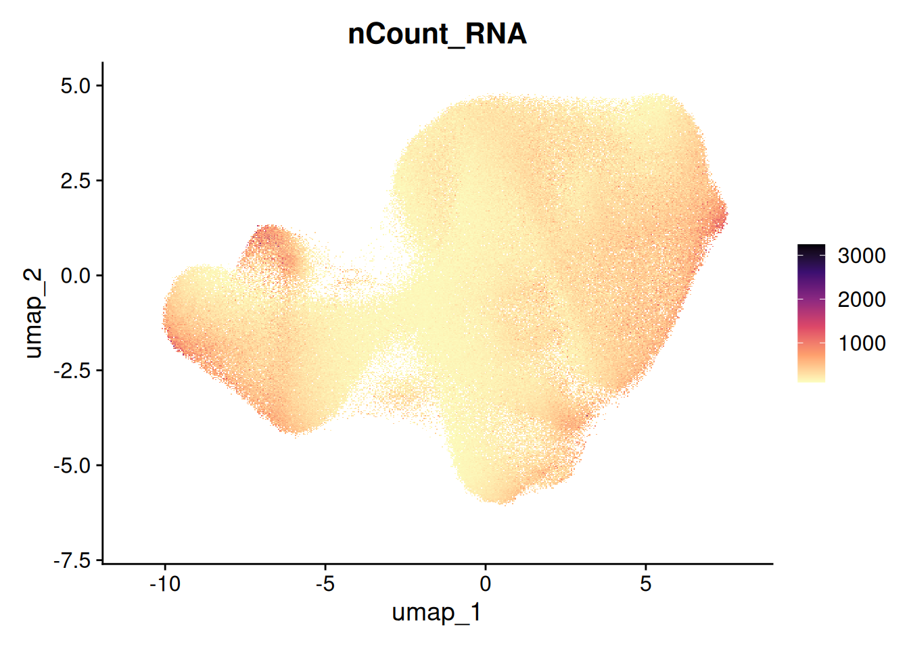
DimPlot(so, group.by = 'seurat_clusters')Rasterizing points since number of points exceeds 100,000.
To disable this behavior set `raster=FALSE`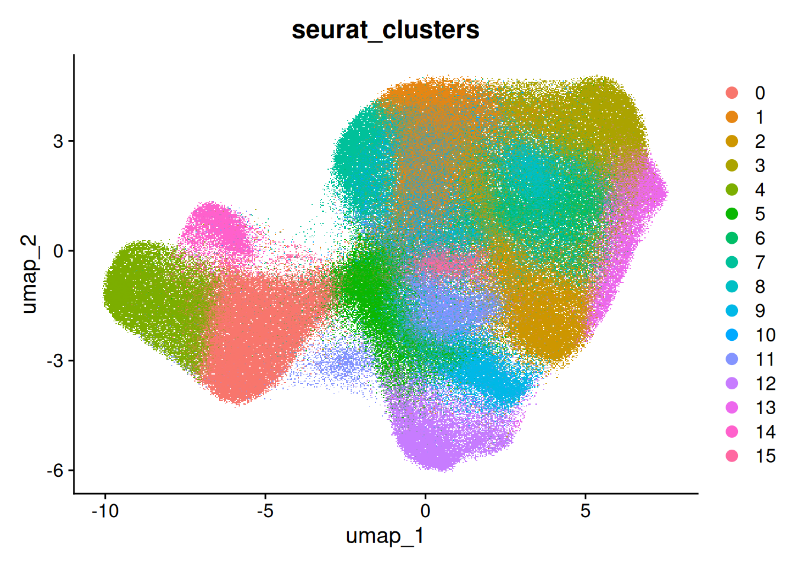
Classifications from Garrido-Trigo et al 2023.
DimPlot(so, group.by = 'celltype_subset')Rasterizing points since number of points exceeds 100,000.
To disable this behavior set `raster=FALSE`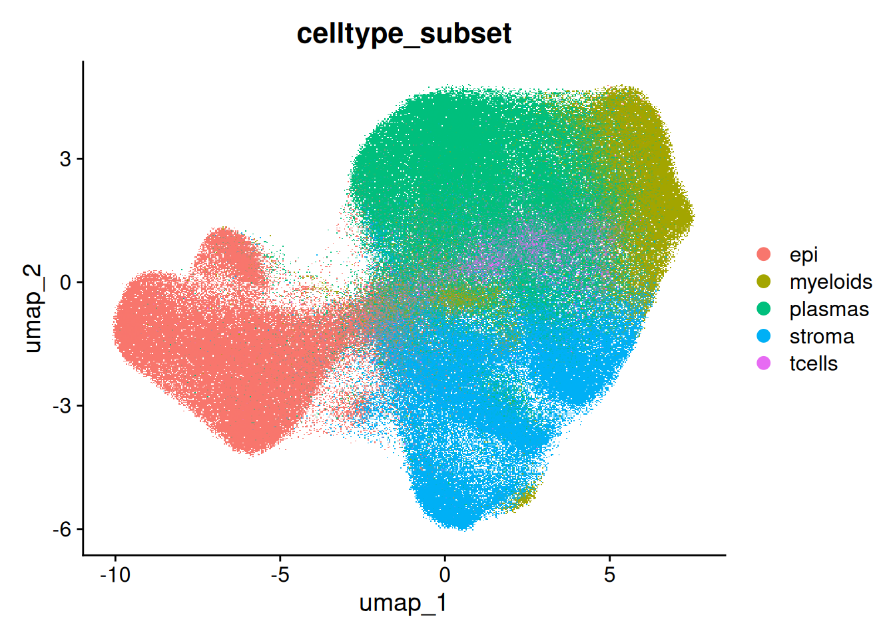
Classifications from Garrido-Trigo et al 2023.
DimPlot(so, group.by = 'celltype_SingleR2')Rasterizing points since number of points exceeds 100,000.
To disable this behavior set `raster=FALSE`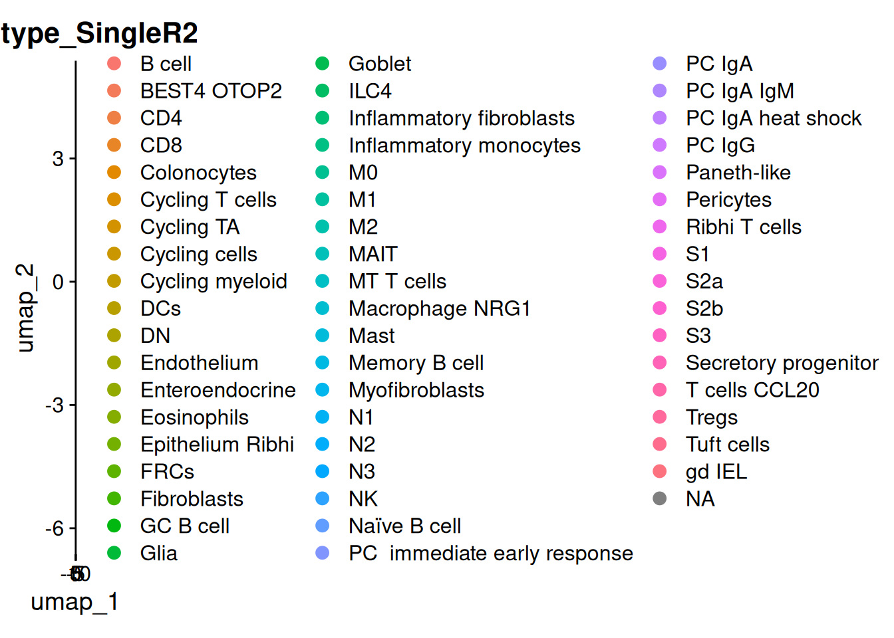
Double checking the clusters line up with annotaiaon
table(so$celltype_subset)
epi myeloids plasmas stroma tcells
82743 44006 130781 84915 11746 table(so$celltype_SingleR2)
B cell BEST4 OTOP2
5314 10155
CD4 CD8
2733 2881
Colonocytes Cycling T cells
17673 323
Cycling TA Cycling cells
1846 2112
Cycling myeloid DCs
1287 1469
DN Endothelium
608 13808
Enteroendocrine Eosinophils
852 194
Epithelium Ribhi FRCs
4379 10027
Fibroblasts GC B cell
1666 3566
Glia Goblet
4353 8864
ILC4 Inflammatory fibroblasts
115 12593
Inflammatory monocytes M0
1735 3001
M1 M2
937 21296
MAIT MT T cells
1233 175
Macrophage NRG1 Mast
9581 2939
Memory B cell Myofibroblasts
7040 16697
N1 N2
556 433
N3 NK
578 240
Naïve B cell PC immediate early response
8906 9826
PC IgA PC IgA IgM
1299 12245
PC IgA heat shock PC IgG
5090 75381
Paneth-like Pericytes
1820 9303
Ribhi T cells S1
87 5214
S2a S2b
3567 4606
S3 Secretory progenitor
3081 34665
T cells CCL20 Tregs
817 2167
Tuft cells gd IEL
2489 367 Composition
heatmap(table(so$celltype_subset,so$celltype_SingleR2))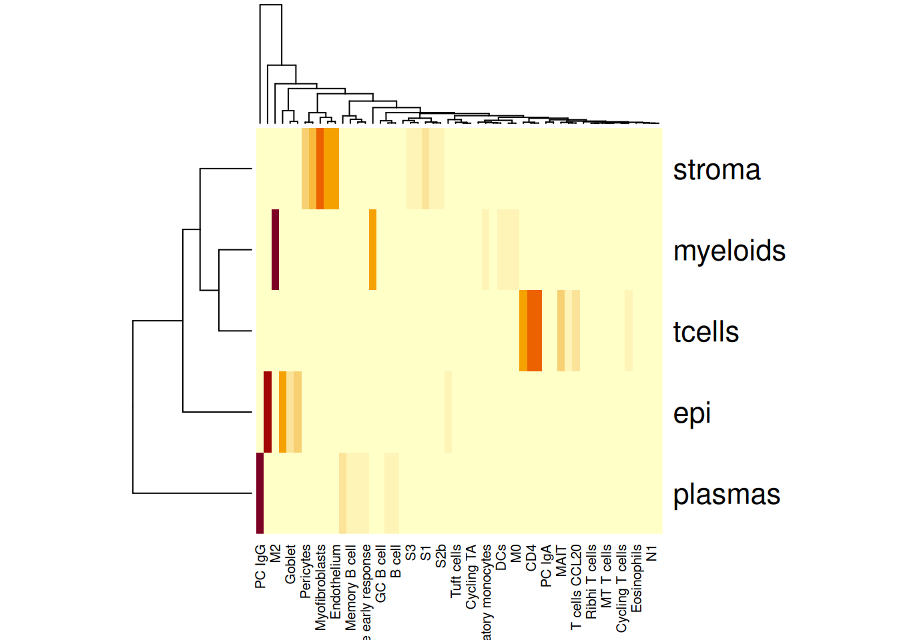
saveRDS(so, seurat_file_01_loaded)
sessionInfo()R version 4.6.1 (2026-06-24)
Platform: x86_64-pc-linux-gnu
Running under: Ubuntu 26.04.1 LTS
Matrix products: default
BLAS: /usr/lib/x86_64-linux-gnu/openblas-pthread/libblas.so.3
LAPACK: /usr/lib/x86_64-linux-gnu/openblas-pthread/libopenblasp-r0.3.32.so; LAPACK version 3.12.0
locale:
[1] LC_CTYPE=en_AU.UTF-8 LC_NUMERIC=C
[3] LC_TIME=en_AU.UTF-8 LC_COLLATE=en_AU.UTF-8
[5] LC_MONETARY=en_AU.UTF-8 LC_MESSAGES=en_AU.UTF-8
[7] LC_PAPER=en_AU.UTF-8 LC_NAME=C
[9] LC_ADDRESS=C LC_TELEPHONE=C
[11] LC_MEASUREMENT=en_AU.UTF-8 LC_IDENTIFICATION=C
time zone: Etc/UTC
tzcode source: system (glibc)
attached base packages:
[1] stats graphics grDevices datasets utils methods base
other attached packages:
[1] data.table_1.18.6.1 lubridate_1.9.5 forcats_1.0.1
[4] stringr_1.6.0 dplyr_1.2.1 purrr_1.2.2
[7] readr_2.2.0 tidyr_1.3.2 tibble_3.3.1
[10] ggplot2_4.0.3 tidyverse_2.0.0 Seurat_5.5.1
[13] SeuratObject_5.4.0 sp_2.2-4 workflowr_1.7.2
loaded via a namespace (and not attached):
[1] RColorBrewer_1.1-3 rstudioapi_0.19.0 jsonlite_2.0.0
[4] magrittr_2.0.5 spatstat.utils_3.2-5 farver_2.1.2
[7] rmarkdown_2.32 fs_2.1.0 vctrs_0.7.3
[10] ROCR_1.0-12 spatstat.explore_3.8-3 htmltools_0.5.9
[13] sass_0.4.10 sctransform_0.4.3 parallelly_1.48.0
[16] KernSmooth_2.23-26 bslib_0.12.0 htmlwidgets_1.6.4
[19] ica_1.0-3 plyr_1.8.9 plotly_4.12.1
[22] zoo_1.9-0 cachem_1.1.0 whisker_0.4.1
[25] igraph_2.3.3 mime_0.13 lifecycle_1.0.5
[28] pkgconfig_2.0.3 Matrix_1.7-5 R6_2.6.1
[31] fastmap_1.2.0 fitdistrplus_1.2-6 future_1.75.0
[34] shiny_1.14.0 digest_0.6.39 patchwork_1.3.2
[37] ps_1.9.3 rprojroot_2.1.1 tensor_1.5.1
[40] RSpectra_0.16-2 irlba_2.3.7 labeling_0.4.3
[43] progressr_1.0.0 timechange_0.4.0 spatstat.sparse_3.2-0
[46] httr_1.4.9 polyclip_1.10-7 abind_1.4-8
[49] compiler_4.6.1 bit64_4.8.6 withr_3.0.3
[52] S7_0.2.2 fastDummies_1.7.6 MASS_7.3-65
[55] tools_4.6.1 lmtest_0.9-40 otel_0.2.0
[58] httpuv_1.6.17 future.apply_1.20.2 goftest_1.2-3
[61] glue_1.8.1 callr_3.8.0 nlme_3.1-169
[64] promises_1.5.0 grid_4.6.1 Rtsne_0.17
[67] getPass_0.2-4 cluster_2.1.8.2 reshape2_1.4.5
[70] generics_0.1.4 gtable_0.3.6 spatstat.data_3.1-9
[73] tzdb_0.5.0 hms_1.1.4 spatstat.geom_3.8-3
[76] RcppAnnoy_0.0.23 ggrepel_0.9.8 RANN_2.6.3
[79] pillar_1.11.1 vroom_1.7.1 spam_2.11-4
[82] RcppHNSW_0.7.0 later_1.4.8 splines_4.6.1
[85] lattice_0.22-9 bit_4.6.0 renv_1.2.4
[88] survival_3.8-6 deldir_2.0-4 tidyselect_1.2.1
[91] miniUI_0.1.2 pbapply_1.7-5 knitr_1.52
[94] git2r_0.36.2 gridExtra_2.3.1 scattermore_1.2
[97] xfun_0.61 matrixStats_1.5.0 stringi_1.8.9
[100] yaml_2.3.12 evaluate_1.0.5 codetools_0.2-20
[103] BiocManager_1.30.27 cli_3.6.6 uwot_0.2.5
[106] xtable_1.8-8 reticulate_1.47.0 processx_3.9.0
[109] jquerylib_0.1.4 dichromat_2.0-1 Rcpp_1.1.2
[112] globals_0.19.1 spatstat.random_3.5-2 png_0.1-9
[115] spatstat.univar_3.2-0 parallel_4.6.1 dotCall64_1.2
[118] listenv_1.0.0 viridisLite_0.4.3 scales_1.4.0
[121] ggridges_0.5.7 crayon_1.5.3 rlang_1.3.0
[124] cowplot_1.2.0